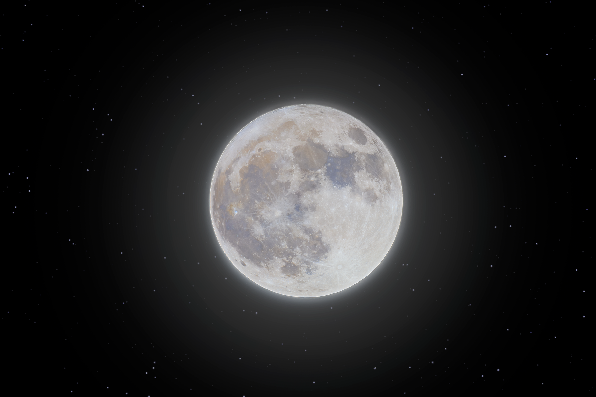
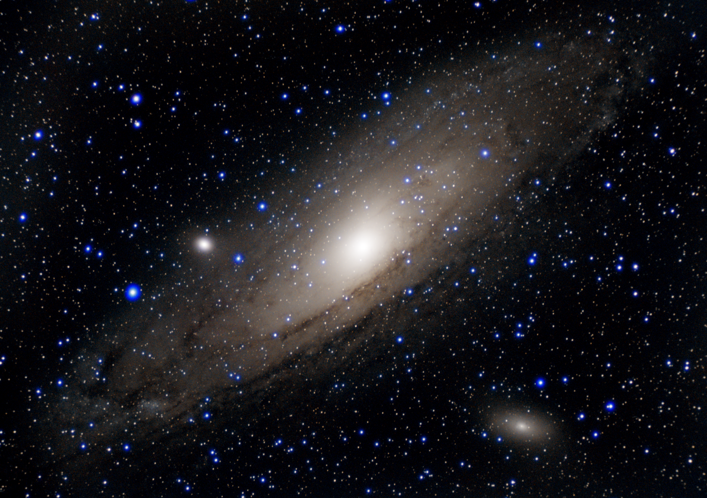

معرض الصور

القمر المكتمل
المعدات: Canon EOS RP + SkyMax102 + Sky-watcher AZ-GTI mount
الموقع: المطية، السعودية

حزام الجبار
المعدات: Canon EOS RP + Canon RF 24-105mm At 105mm + Sky-watcher AZ-GTI mount
الموقع: جبال قطن، السعودية

مركز درب التبانة
المعدات: Equipment: Canon EOS RP + Canon RF 24-105mm At 105mm + Sky-watcher AZ-GTI mount
الموقع:المطية ,السعودية

مجرة أندروميدا
المعدات: Canon EOS RP + Skywatcher StarTravel 102 + Sky-watcher AZ-GTI mount
الموقع: المطية , السعودية

سديم رو الحواء
المعدات: Canon EOS RP + Canon RF 24-105mm At 50mm + Sky-watcher AZ-GTI mount
الموقع: جبال سواج، السعودية